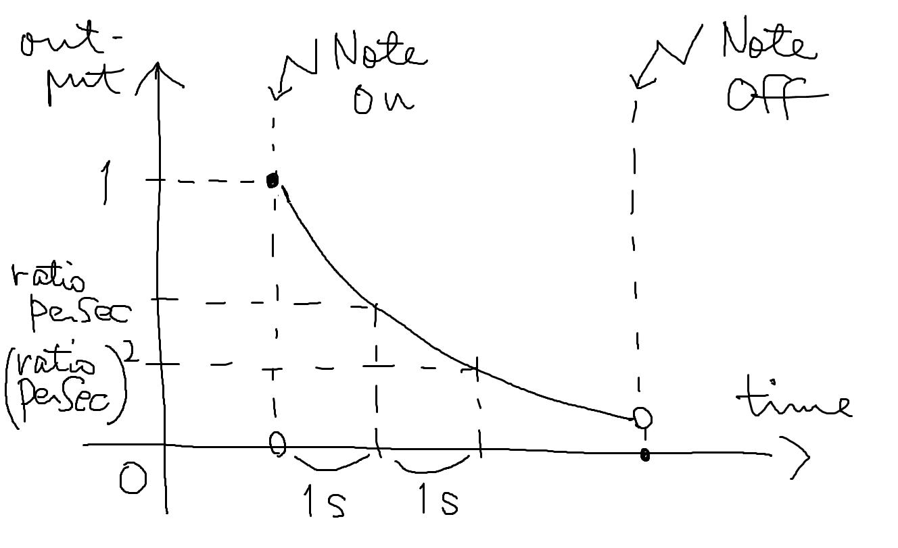

振幅が指数的に減衰するエンベロープを提供します。
入力はありません。
| 名前 | 必須/省略時 | 説明 |
|---|---|---|
ratioPerSec |
必須 | 1 秒あたりの減衰率を指定します。 |
|
種別 |
キー |
説明 |
|---|---|---|
|
Note |
ノートオンで出力を 1 にし、発音を開始します。ノートオフで出力を 0 にします。 |
ノートオンからの時間に応じたエンベロープの振幅を出力します。ノートオフの後は 0 を出力します。
[0, 1]
// オシレータに対してエンベロープを適用する
pulseOsc * expEnv { ratioPerSec: 1 / 8 }ノートオンの瞬間 1 を出力します。
そこから出力は指数的に減衰し、1 秒ごとに ratioPerSec
倍になります。
ノートオフすると出力は 0 になります。また、ノートオフしなくても、出力が 1/65536 未満になると、出力は 0 になります。

次のように、エンベロープをパイプで接続しないでください：
pulseOsc | expEnv { ratioPerSec: 1 / 8 }オシレータの出力にエンベロープを適用することを意図していますが、そうはなりません。
エンベロープは「入力にエンベロープを適用するエフェクト」ではなく、「エンベロープを出力するジェネレータ」であり、入力を取りません。
エンベロープをエフェクトのように接続すると、オシレータの出力は無視され、結果として出力は単なるエンベロープの値になってしまいます（音としては聞こえません）。
エンベロープを適用するには * を使ってください。